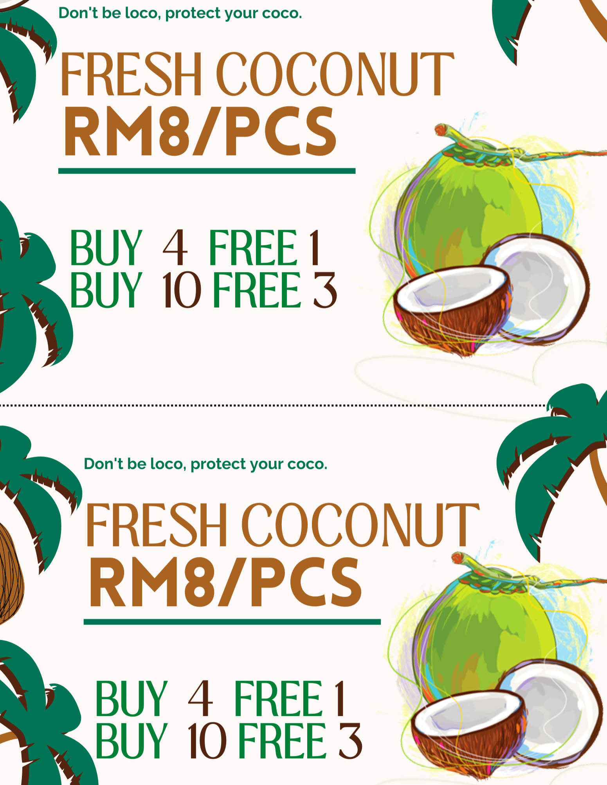

<!--caogao-->

<div id="AutumnC" class="carousel slide">
  <div class="carousel-inner">
    <div class="carousel-item active">
      
    </div>
    <div class="carousel-item">
      
    </div>
    <div class="carousel-item">
      
    </div>
    <div class="carousel-item">
      
    </div>
  </div>
  <button class="carousel-control-prev" type="button" data-bs-target="#AutumnC" data-bs-slide="prev">
    <span class="carousel-control-prev-icon" aria-hidden="true"></span>
    <span class="visually-hidden">Previous</span>
  </button>
  <button class="carousel-control-next" type="button" data-bs-target="#AutumnC" data-bs-slide="next">
    <span class="carousel-control-next-icon" aria-hidden="true"></span>
    <span class="visually-hidden">Next</span>
  </button>

  <!--toast>
  <p></p>
  <h6>曾担任学校季刊美术编辑、文字编辑（2年）</h6>
  <h6>社会实践：研究国潮品牌跨文化传播</h6>

    <button type="button" class="btn btn-secondary" id="liveToastBtn">实践详情</button>

    <div class="toast-container position-fixed bottom-0 end-0 p-3">
      <div id="liveToast" class="toast" role="alert" aria-live="assertive" aria-atomic="true">
        <div class="toast-header">
          
          <strong class="me-auto">国潮_社会实践</strong>
          <small>11 mins ago</small>
          <button type="button" class="btn-close" data-bs-dismiss="toast" aria-label="Close"></button>
        </div>
        <div class="toast-body" id="toast1">
          深入调查研究了在华留学生对于以百雀羚、李宁为代表的国潮品牌的了解、消费情况、综合印象，以及对中国文化融入时尚设计的偏好和接纳程度，进而探究国潮元素对本土品牌跨文化传播的影响。在实践中，我们计划为中国本土品牌利用国潮元素进行跨文化传播提供参考，提高中国企业的国际知名度和认可度，让带有中国文化特色和文化符号的优秀产品走向世界。
        </div>
      </div>
    </div>
    <p></p>
